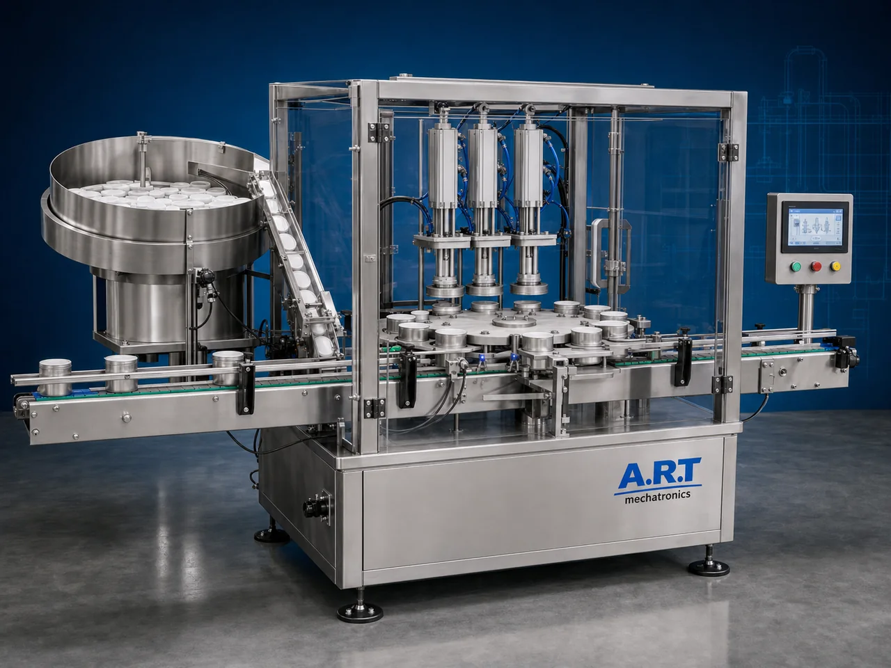

Cap & Lid Pressing Machine (Automatic Can & Jar Lid Pressing System)
A Cap & Lid Pressing Machine, also known as a Lid Pressing Machine, Cap Pressing Machine, Jar Lid Press Machine, or Automatic Container Lid Closing System, is an advanced industrial packaging solution designed for automatic lid placement, cap pressing, snap-fit closing, lid locking, sealing…

About the Cap Lid Pressing
Cap and lid pressing systems are widely used for: ✔ Jar lid pressing ✔ Tin can lid closing ✔ Snap-fit container sealing ✔ Food container lid pressing ✔ Cosmetic jar closing ✔ Pharmaceutical container packaging ✔ Airtight packaging support ✔ Retail container packaging operations
The machine improves: ✔ Lid fitting accuracy ✔ Packaging consistency ✔ Product hygiene ✔ Airtight sealing support ✔ Production efficiency ✔ Packaging appearance ✔ Product safety
Industrial cap & lid pressing machines use: ✔ Automatic lid feeding systems ✔ Servo synchronized pressing systems ✔ PLC and HMI automation controls ✔ Precision pneumatic or mechanical pressing units ✔ Conveyor integrated handling systems
to automatically press and secure lids onto containers with superior consistency and high production efficiency.
Cap & lid pressing machines are widely used in industries such as:
Food processing industries Beverage industries Cosmetic industries Pharmaceutical industries Tea industries Spice industries Confectionery industries FMCG industries
where secure lid closing, hygienic packaging, and high-speed production operations are essential.
The machine is highly suitable for: ✔ Jar lid pressing ✔ Can lid pressing ✔ Cosmetic container closing ✔ Food jar packaging ✔ Plastic container sealing support ✔ Premium retail packaging
ART Mechatronics offers high-performance cap & lid pressing machines, engineered for continuous industrial operation, accurate lid pressing performance, hygienic packaging quality, and reliable long-term packaging automation.
Working Principle of Cap & Lid Pressing Machine
- 1. Empty / Filled Container Feeding Containers are automatically fed into pressing section through synchronized conveyor systems.
- 2. Lid Feeding & Positioning Process Machine automatically feeds and positions lids or caps onto containers before pressing operation.
Servo synchronization ensures accurate lid alignment and smooth container handling.
- 3. Cap & Lid Pressing Operation Machine handles: ✔ Tin cans ✔ Glass jars ✔ PET jars ✔ Plastic containers ✔ Food containers ✔ Cosmetic jars ✔ FMCG packaging containers
accurately and continuously.
- 4. Lid Locking & Sealing Support Process Machine performs: Cap pressing Snap-fit locking Pressure sealing support Leak-proof lid fitting
for hygienic and secure packaging quality.
- 5. Coding & Inspection Integration Optional systems include: Batch coding Date printing QR code printing Vision inspection Cap presence detection systems
- 6. Finished Container Discharge Finished containers discharged automatically for: Cartoning Case packing Retail distribution Export shipment handling
Types of Cap & Lid Pressing Machines
- 1. Jar Lid Pressing Machine Designed for: ✔ Glass and PET jar packaging applications
- 2. Can Lid Closing Machine Suitable for: ✔ Tin can and metal container packaging systems
- 3. Pneumatic Lid Pressing Machine Uses: ✔ High-force industrial lid pressing operations
- 4. Conveyorized Lid Press Machine Designed for: ✔ Continuous industrial packaging lines
- 5. Servo Driven Lid Pressing Machine Suitable for: ✔ Precision high-speed lid pressing operations
- 6. Fully Automatic Cap & Lid Pressing System Designed for: ✔ Complete industrial packaging automation lines
Industries Using Cap & Lid Pressing Machines
🍃 Food Processing Industry Food jars, ingredient containers, and retail packaging lid pressing systems. 🥤 Beverage Industry Beverage containers, syrups, and liquid packaging lid closing systems. 🧴 Cosmetic Industry Cream jars, lotion containers, and personal care packaging lid pressing systems. 💊 Pharmaceutical Industry Medicine jars and healthcare packaging lid closing systems. 🌶️ Spice Industry Spice jars, seasoning containers, and food packaging lid pressing systems. 🛒 FMCG Industry Retail packaging container and product packaging lid locking systems.
Features & Advantages
✔ High-speed automatic lid pressing operation ✔ Accurate lid alignment and secure closing systems ✔ Hygienic and leak-proof packaging support ✔ PLC and servo automation control systems ✔ Improves product safety and packaging consistency ✔ Reduces manual handling and labor dependency ✔ Supports multiple lid sizes and container formats ✔ Reliable long-term industrial performance ✔ Smooth and continuous packaging line integration
Technical Highlights
Machine Type: Automatic lid pressing machine Industrial cap pressing system Container lid closing machine Container Type: Tin cans Glass jars PET jars Plastic containers Retail packaging containers Pressing Integration: Pneumatic pressing systems Servo pressing systems Mechanical lid pressing systems Features: PLC control system Servo synchronization Touchscreen HMI Automatic lid feeding Conveyor integration Applications: Food containers Cosmetic jars Pharma containers Spice jars Retail packaging containers Automation: Semi-automatic Fully automatic industrial systems
Turnkey Cap & Lid Pressing Solutions
ART Mechatronics offers: Complete lid pressing systems Automatic cap closing solutions Packaging automation integration systems Conveyor synchronization systems Installation & commissioning After-sales service & AMC
Why Choose Art Mechatronics
Expertise in industrial packaging and automation systems Customized lid pressing solutions for multiple industries High-performance and durable packaging technology Advanced PLC and servo automation systems Proven industrial packaging performance across sectors
Applications
Food Processing Industries Beverage Manufacturing Plants Cosmetic Manufacturing Facilities Pharmaceutical Packaging Units Spice Packaging Industries FMCG Packaging Plants
Get pricing & specs for the Cap Lid Pressing
Share the product, target capacity, current process and plant location. These details help our engineers discuss the right machine or line configuration.
One partner, from design to start-up
ART Mechatronics designs, manufactures, installs and commissions your Cap Lid Pressing solution with regional presence in India, UAE and Thailand.